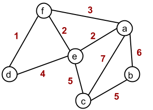

Anything new and relevant to CSCI 320, Spring 2019, will be emailed to the class. Such emails will arrive at the email address that is indicated at your Student Record. Announcements with lasting significance will also be posted here.
| Date | Announcement |
|---|---|
| Week of January 7: | Tutorial: This week there will be tutorials! |
| Week of January 14: |
The Tests will be on the following days, in Tutorial:
Test 1 FAs: January 29 Test 2 CFLs: February 19 Test 3 The rest (to date): March 26 |
| Week of February 25: |
Due to the snow days, the Test 2 will
be on the following days, in Tutorial:
Test 2 CFLs: March 5 Regarding Assignment 3. Question 1 is pretty challenging. (Note that I have updated the Question to ask for a NATURAL PDA for the language, not a top-down or bottom-up parser.) Some students have even said it can't be done! But fear not -- you have not been assigned an impossible task. It's true that the complement language is not Context-Free (CF) -- it is the language of all strings that either have odd length or are of the form ww (first half equals last half). Note, however, that a language can be CF while its complement is not, and that is the case here. Some hints might be useful, and I provide them here. Hint 1: First, solve it for all even length strings. Then see if your solution handles odd length strings correctly, and adjust if not. Hint 2: In order for a string of length 2n to be of the form ww, it must be the case that for all i≤ n, wi= wi+n. [Here wi denotes the ith letter in the string w.] What is the negation of that claim -- is it a "for all" or "exists" quantifier? Formulate a mathematical characterization of the negation of the "for all" claim; make your new claim begin with a quantifier (∃ or ∀); i.e., it should not begin with negation. Recall that ¬ ∀ can always be rewritten as a ∃, and a ¬ ∃ can be rewritten as a ∀ -- if you don't know how to do that, then see the bullet for De Morgan's Laws for quantifiers on this page (just before the Nested Quantifiers section). Hint 3: You will need non-determinism. Suppose your answer to Hint 2 is an existential quantified claim. Are you postulating the existence of two letters in the string? How many letters apart are they? How can you use a PDA to ensure they are exactly that far apart? |
| Week of March 4: | The assignment 3 will be due Wed March 6 at 2:30. |
| Week of April 1-5: |
Questions 4 and 5 of A5 are due on Friday.
For the WEIGHTY_CYCLE question, you can assume that the following problem is NP-complete: HAMCYCLE = {<G> | G is a graph, and there is a cycle that visits each vertex of G exactly once}. Note that the graph in HAMCYCLE is undirected and no weights are assumed on the edges. For the WEIGHTY_CYCLE language, the cycle in question must be simple (visits no vertex or edge more than once); note that WEIGHTY_CYCLE does not require that EVERY vertex be visited. The weight function w which is part of the input is simply saying each edge, say (u,v), has a weight on it, denoted w(u,v). An example of a weighted graph is below. If that graph's encoding is <G_example1>, then the string <G_example1, 18> is in the language WEIGHTY_CYCLE, because there is a simple cycle in the graph where summing the weights on the edges yeilds 18 or greater -- specifically, a,b,c,e,a is such a cycle.  |
| Week of April 8-12: | I will hold office hours on Aril 16 (Tuesday before exam), from 2:30-4:30, in 315/216. |
Useful Links: